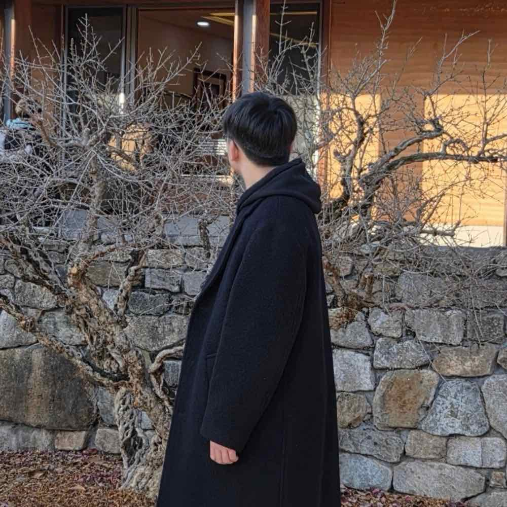

Bugeon Park
로컬에서 동작하는 AI 에이전트와 시스템을 만듭니다. 설계부터 테스트, 보안 검증, 릴리스까지 직접 책임집니다.
I build local-first AI agents and systems, and own them end to end: design, testing, security checks and release.

- 직책
- Role
- CTO
- 백준 최고 랭크
- BOJ peak rank
- #67
- 경쟁 프로그래밍
- Competitive programming
- Top 0.11%
- 주력 분야
- Focus
- Local-first AI

소프트웨어, 수학, 공학이 만나는 곳에서 문제를 정의하고 해결합니다.
I define and solve problems where software, mathematics and engineering meet.
박부건입니다. AI 시스템, 기계공학, 알고리즘을 공부하며 Team PJ의 CTO로 기술 방향과 시스템 설계를 맡고 있습니다.
요즘은 외부 서버에 기대지 않는 로컬 우선(local-first) AI에 집중합니다. 데이터는 기기 안에서 처리하고, 에이전트의 모든 실행은 승인·감사·롤백할 수 있게 설계합니다.
I'm Bugeon Park. I study AI systems, mechanical engineering and algorithms, and as CTO of Team PJ I lead technical direction and system design.
My focus is local-first AI that doesn't rely on outside servers. Data stays on the device, and every action an agent takes can be approved, audited and rolled back.
AI를 시스템으로 만듭니다
Turning AI into systems
모델 하나가 아니라, 실행하고 검증하고 운영할 수 있는 전체 시스템을 다룹니다.
Not just a model, but the whole system around it: execution, verification and operation.
API 호출을 넘어선 AI 시스템
AI beyond the API call
로컬 모델, 에이전트, 도구 실행, 검증까지 시스템 전체를 직접 설계하고 통합합니다.
Local models, agents, tool execution and verification, designed and integrated as one system.
안전하게 동작하는 에이전트
Agents that run safely
승인 기반 실행, 위변조 방지 감사 로그, 서명 검증, 롤백을 런타임에 결합합니다.
Approval-gated execution, tamper-evident audit logs, signature checks and rollback in the runtime.
검증까지 이어지는 개발
Development that ends in evidence
단위·통합·E2E 테스트와 벤치마크, 재현성 검증을 하나의 흐름으로 묶습니다.
Unit, integration and E2E tests, benchmarks and reproducibility in one workflow.
직접 운영하는 인프라
Self-hosted infrastructure
Linux, Raspberry Pi, 서버를 함께 운용하며 로컬 AI 환경을 구성합니다.
Linux machines, Raspberry Pi and servers run together as a local AI environment.
여러 도메인으로 확장
AI across domains
금융 시계열 예측, 위성 영상 분석, 로봇 팔 제어에 AI를 적용합니다.
Financial forecasting, satellite-image analysis and robotic-arm control.
기술 스택
Technical stack
실제 프로젝트에서 구현하고 테스트하고 운영해 본 기술만 정리했습니다.
Only tools I have implemented, tested and run in real projects.
Languages
AI · LLM
Vision · ML
Mobile · Backend
Testing · Release
Security
Infra · Hardware
Tools
주력으로 쓰는 기술Primary tools
아이디어에서 릴리스까지
From idea to release
대회와 개인 프로젝트에서 반복해 온 작업 방식입니다. 검증된 결과물이 나올 때까지 직접 가져갑니다.
The cycle I run on competition and personal projects, all the way to a verified release.
- 문제 정의Define
- 시스템 설계Design
- 구현Build
- 테스트Test
- 벤치마크Benchmark
- 보안 점검Secure
- 문서화Document
- 릴리스Release
함께 만들 일이 있다면 연락 주세요.
Have something to build together?
협업, 프로젝트, 연구 관련 문의 모두 환영합니다.
Collaboration, projects and research inquiries are all welcome.